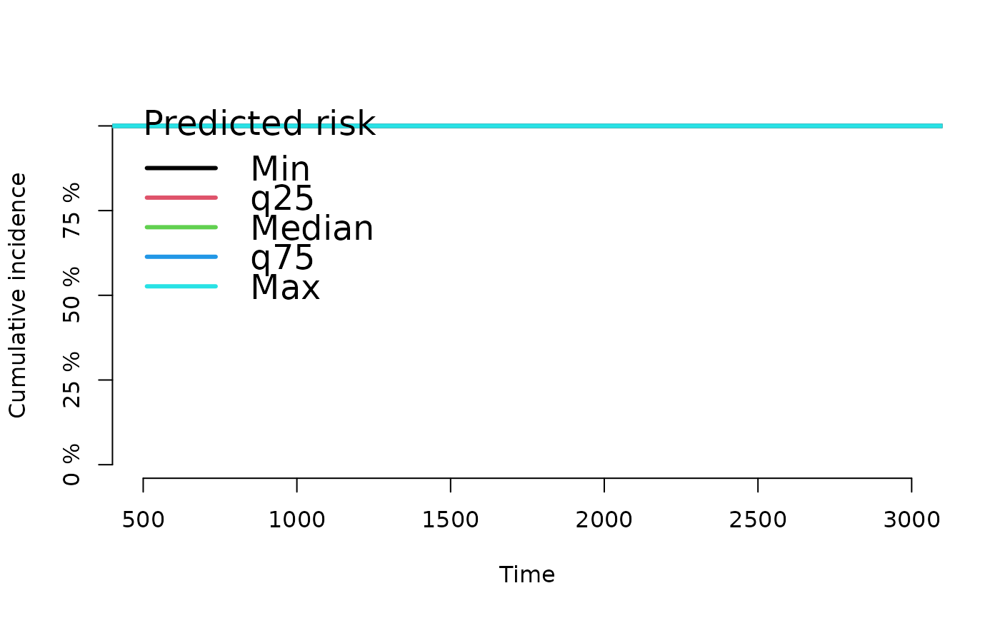

Show predicted risk obtained by a risk prediction model as a function of time.
Usage
# S3 method for riskRegression
plot(x,
cause,
newdata,
xlab,
ylab,
xlim,
ylim,
lwd,
col,
lty,
axes=TRUE,
percent=TRUE,
legend=TRUE,
add=FALSE,
...)Arguments
- x
Fitted object obtained with one of
ARR,LRR,riskRegression.- cause
For CauseSpecificCox models the cause of interest.
- newdata
A data frame containing predictor variable combinations for which to compute predicted risk.
- xlab
See
plot- ylab
See
plot- xlim
See
plot- ylim
See
plot- lwd
A vector of line thicknesses for the regression coefficients.
- col
A vector of colors for the regression coefficients.
- lty
A vector of line types for the regression coefficients.
- axes
Logical. If
FALSEthen do not draw axes.- percent
If true the y-axis is labeled in percent.
- legend
If true draw a legend.
- add
Logical. If
TRUEthen add lines to an existing plot.- ...
Used for transclusion of smart arguments for
plot,lines,axisandbackground. See functionSmartControlfrom prodlim.
Examples
library(survival)
library(prodlim)
data(Melanoma)
fit.arr <- ARR(Hist(time,status)~invasion+age+strata(sex),data=Melanoma,cause=1)
plot(fit.arr,xlim=c(500,3000))
#> Warning: Argument newdata is missing.
#> Shown are the cumulative incidence curves from the original data set.
#> Selected are curves based on individual risk (min,q25,median,q75,max) at the median time:1112.25714285714
